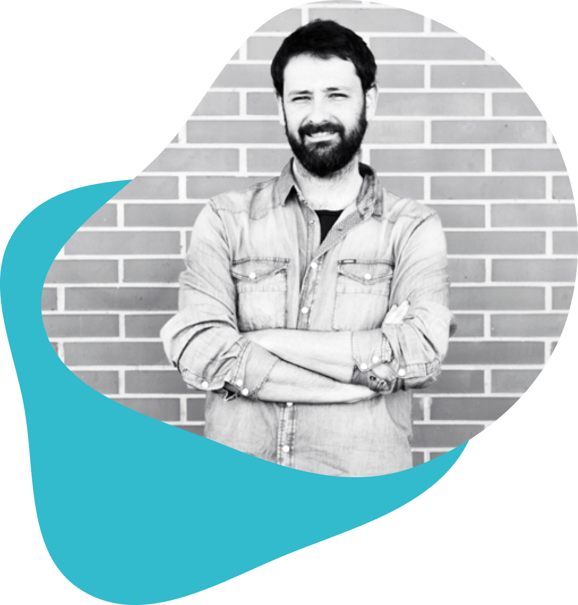

Quique
Fernández
Diseñador UX UI, Director de Arte, Ilustrador…
y más cosas, según el día.
Llevo desde principios del siglo XXI trabajando en creatividad, desarrollando labores de diseño, maquetación, packaging, ilustración, dirección de arte, gestión de proyectos…
Ampliando registro y aprendiendo todo lo relacionado con el diseño UI/UX.
Sigo sin tener ni idea, pero aprendo rápido.
Proyectos recientes
Esp | Eng
UX UI Design
Salud Madrid // Diseño UX UI
Filmin // Nueva funcionalidad
Kirikú y la bruja // Rediseño web
Contacto
Si quieres ponerte en contacto conmigo, estoy a una llamada de teléfono o a un email de distancia. ¡Muchas gracias!